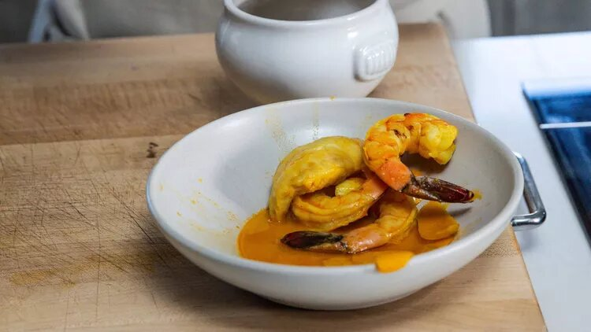
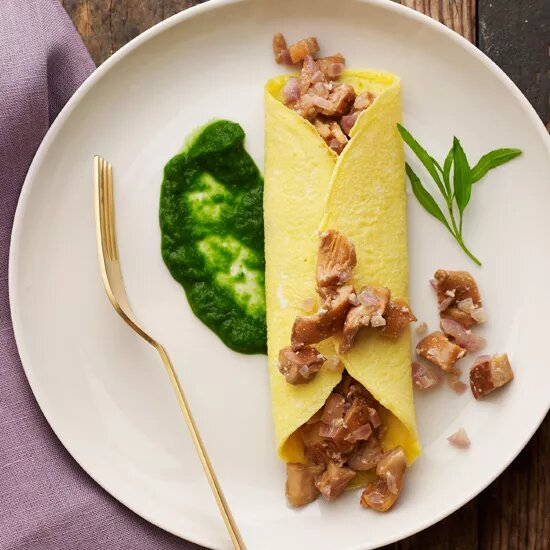
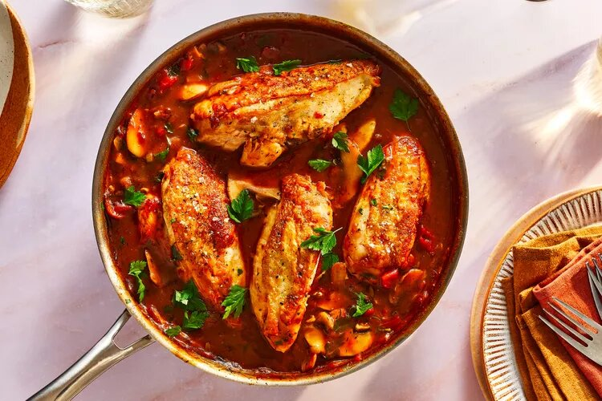

bouillabaisse starts with a quick-cooking, but deeply flavored, seafood broth. Layering a base of aromatics with fresh snapper, scallops, shrimp, and a mix of Pernod and dry white wine creates a long-simmered flavor in under an hour. Be sure to use shell-on shrimp; those shells add flavor and body to the stock.

Ingredients
Seafood Broth (Yield: 5 cups)
2 tablespoons unsalted butter, plus more if needed
1 onion, cut into small cubes
1 carrot, cut into small cubes
1 celery stalk, cut into small cubes
1 fennel bulb, cut into small cubes, fronds reserved for garnish
1 leek, white and light green parts only, thinly sliced
6 garlic cloves, thinly sliced
4 ounces tomato paste
1 tomato, cut into small cubes
5 to 6 shell-on raw large shrimp (about 6 ounces), roughly chopped
1 (7-ounce) skinless red snapper fillet (or any white fish), roughly chopped
1 sea scallop, roughly chopped
3 thyme sprigs
1 pinch piment d’Espelette
1/3 cup Pernod
1 cup dry white wine
1/2 tablespoons saffron
4 cups water
Bouillabaisse
Zest of 1/2 an orange
Zest of 1/2 a lemon
2 (7-ounce) skinless red snapper fillets
4 sea scallops (about 5 ounces)
8 shell-on raw large shrimp (about 8 ounces)
Kosher salt
Freshly ground pepper
Additional Ingredients
Chopped parsley
Extra-virgin olive oil
Toasted baguette slices
Rouille
Directions
Make the Seafood Broth
Melt butter in a large enameled cast-iron casserole over medium. Add onion, carrot, celery, fennel, leeks, and garlic. Cook until softened and translucent but not browned, 8 to 10 minutes. Add tomato paste; stir until well combined.
Add tomato, shrimp, snapper, and scallop; stir to combine. If ingredients seem dry, add 1 tablespoon butter. Add thyme and piment d’Espelette. Stir in Pernod, scraping browned bits from the bottom of the pan. Add white wine; bring to a boil. Stir in saffron. Add 4 cups of water, and return to a boil. Reduce heat to low, and simmer for 20 minutes.
Working in batches if necessary, transfer seafood broth to a blender. Secure the lid on the blender, and remove the center piece of the lid to allow steam to escape. Place a clean kitchen towel over the opening. Process until smooth.
Pour seafood broth through a fine wire-mesh strainer set over a large heatproof bowl, pressing on solids to extract as much liquid as possible. Discard solids.
Make the Bouillabaisse
Combine seafood broth, orange zest, and lemon zest in a large enameled cast-iron casserole. Bring to a simmer over low.
Add red snapper fillets; cook until just cooked through, about 7 minutes. After 2 minutes, add scallops and shrimp; cook until just cooked through, about 5 minutes.
Remove from heat; season to taste with salt and pepper. Divide bouillabaisse among 4 serving bowls. Garnish with reserved fennel fronds, chopped parsley, and extra-virgin olive oil. Serve with toasted baguette slices and rouille.
Chanterelle Omelets with Fines Herbes Sauce
The Chanterelle Omelets with Fines Herbes Sauce present a delightful culinary experience, blending the earthy richness of sautéed chanterelle mushrooms within delicately folded omelets. The fines herbes sauce, a blend of aromatic fresh herbs, accentuates the dish with a burst of vibrant flavors, making it a savory and elegant breakfast or brunch choice.

Ingredients
2 1/2 cups flat-leaf parsley leaves
2 cups chives cut in 1/2-inch lengths
1 cup chervil leaves
1/2 cup tarragon leaves
3/4 cup water
Salt
2 tablespoons plus 1 teaspoon unsalted butter
1 small shallot, minced
1/4 pound chanterelles, trimmed and coarsely chopped
1 tablespoon crème fraîche
1/2 teaspoon vegetable oil
4 large eggs, at room temperature
Directions
Preheat the oven to 250°. Bring a large saucepan of salted water to a boil. Prepare a bowl of ice water. Add all of the herbs to the boiling water and cook for 4 minutes. Using a slotted spoon, transfer the herbs to the ice water to cool completely. Transfer the herbs to a kitchen towel and wring dry. Transfer the herbs to a blender and add the 3/4 cup of water. Blend at high speed until pureed. Season with salt.
In a medium skillet, melt 1 tablespoon of the butter. Add the minced shallot and cook over moderate heat until softened, about 2 minutes. Add the chanterelles, season with salt and cook, stirring, until tender, 8 minutes. Remove from the heat, stir in the crème fraîche and keep warm.
In a 6- or 8-inch nonstick, ovenproof skillet, melt 1 teaspoon of the butter in the oil over moderate heat. In a small bowl, beat 1 egg with a pinch of salt until the egg foams. Add the egg to the skillet and cook over low heat until it starts to set, about 10 seconds. Transfer the skillet to the oven and cook until the egg is just set, about 1 minute. Slide the egg onto a plate and spread a rounded tablespoon of chanterelles down the center. Fold both sides of the omelet over the mushrooms and roll the omelet over to make a neat package. Spoon a little of the herb sauce alongside and serve immediately. Repeat the process 3 times with the remaining eggs, chanterelles and herb sauce, using 1 teaspoon of butter for each omelet.
Make Ahead
The herb sauce can be refrigerated for up to 3 days; bring to room temperature before using. The chanterelles can be refrigerated overnight; reheat gently.
Suggested Pairing
Eggs are difficult to pair with wine (particularly oaky whites), but the crisp acidity in Champagne makes it a wonderful pairing here.
Chicken Chasseur
A French classic that never seems to go out of style, this dish combines mushrooms and chicken in a tomato and white wine sauce.
Chicken chasseur, literally "hunter's chicken," harks back to a time when game birds and mushrooms from the woods were a natural autumn combination. Though Italian chicken cacciatore also has the same translation, that dish's ingredients are not exactly the same — most notably, it includes bell pepper, uses red instead of white wine, and relies on a different set of herbs for flavour.
The beauty of this chicken chasseur recipe is that it comes together in one pot in less than an hour, complete with an aromatic sauce. It's sophisticated enough to serve to guests, but simple enough to prepare on a busy weeknight for a cozy meal at home. Cremini or button mushrooms will do just fine here, but feel free to swap in your favourite or use a blend.

Ingredients
1 tablespoon cooking oil
4 bone-in chicken breasts (about 2 1/4 pounds in all)
1 teaspoon kosher salt, divided
1/2 teaspoon freshly ground black pepper, divided
1 tablespoon butter
1 onion, chopped
3/4 pound mushrooms, sliced
2 cloves garlic, minced
1 1/2 teaspoons flour
6 tablespoons dry vermouth or dry white wine
2/3 cup canned low-sodium chicken broth or homemade stock
1 cup canned crushed tomatoes, drained
1/4 teaspoon dried thyme
2 tablespoons chopped fresh parsley
Directions
Gather the ingredients.
In a large, deep frying pan, heat the oil over moderately high heat. Season the chicken with 1/4 teaspoon each of salt and pepper and add to the pan. Cook until browned, turning, about 8 minutes in all. Remove. Pour off all but 1 tablespoon fat from the pan.
Add the butter to the pan and reduce the heat to moderately low. Add the onion and cook, stirring occasionally, until translucent, about 5 minutes. Raise the heat to moderately high. Add the mushrooms, garlic, and 1/4 teaspoon of salt. Cook, stirring frequently, until the vegetables are browned, about 5 minutes.
Add the flour and cook, stirring, for 30 seconds. Stir in the vermouth and bring back to a simmer.
Add the chicken and any accumulated juices. Reduce the heat; simmer, covered, until the chicken is done, about 10 minutes.
Stir in the parsley and the remaining 1/4 teaspoon pepper.
Suggested Pairing
This earthy dish is perfectly suited to the rustic charms of a country red wine from southwestern France. Look for a bottle from one of the various appellations in that region, such as Cahors, Madiran, or Bergerac.